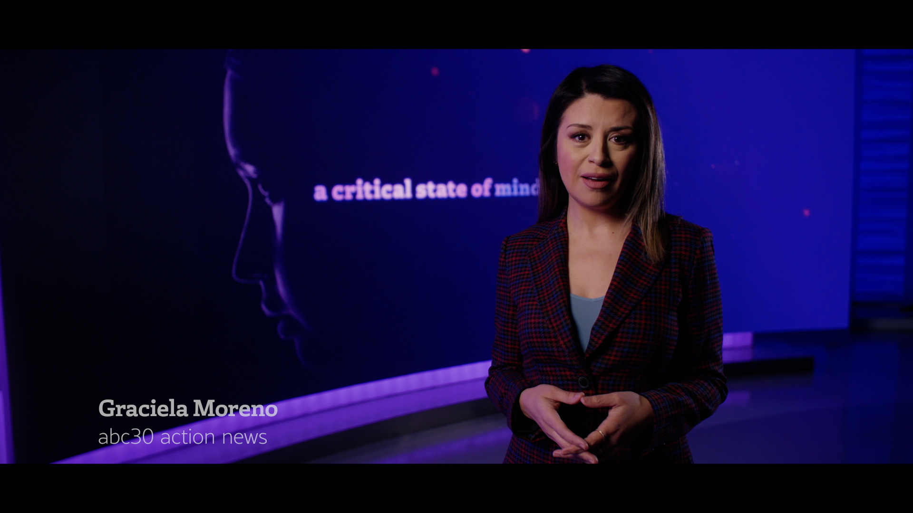
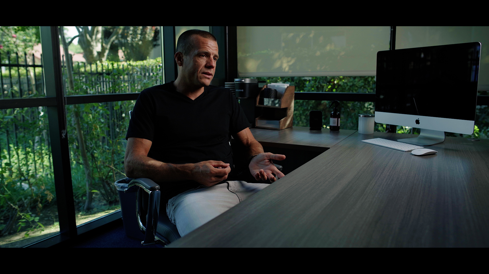
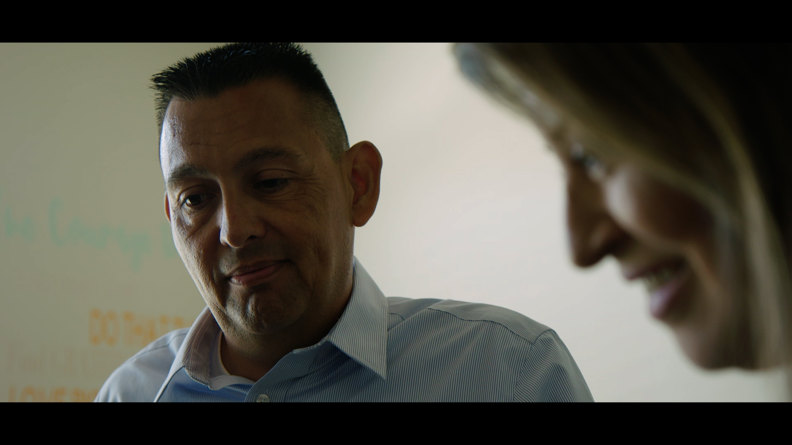
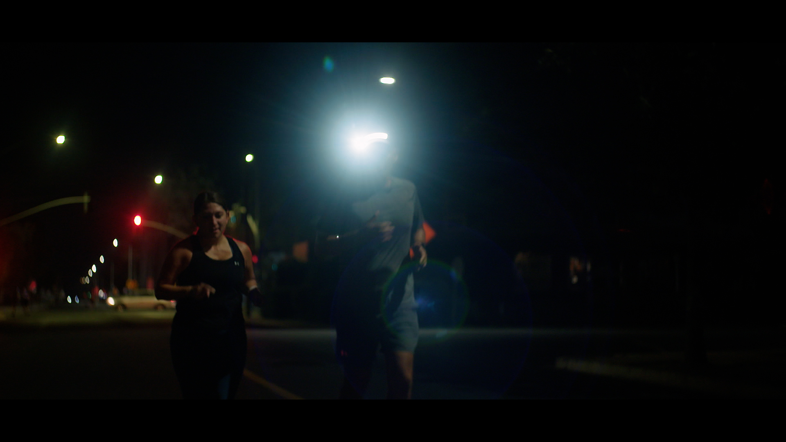
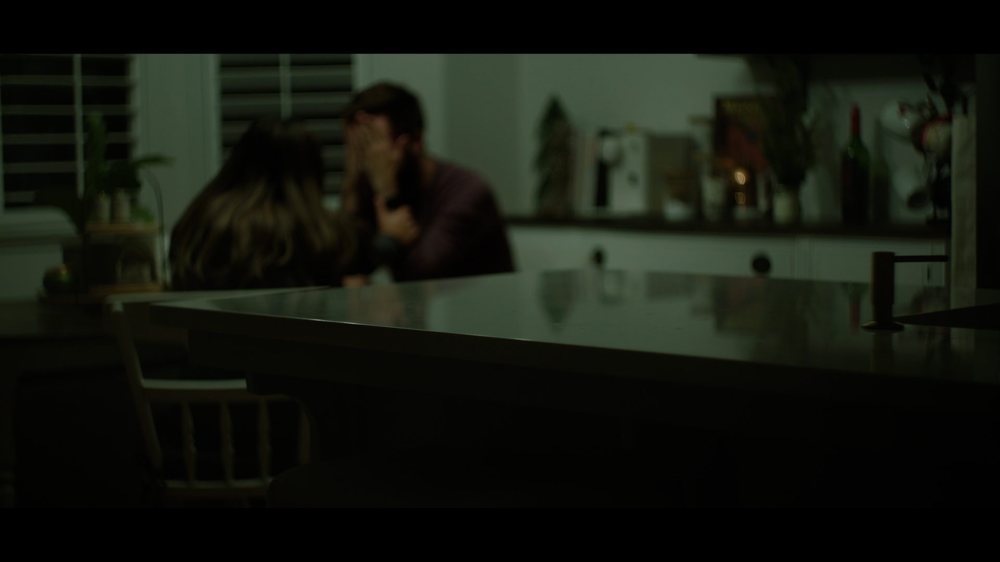
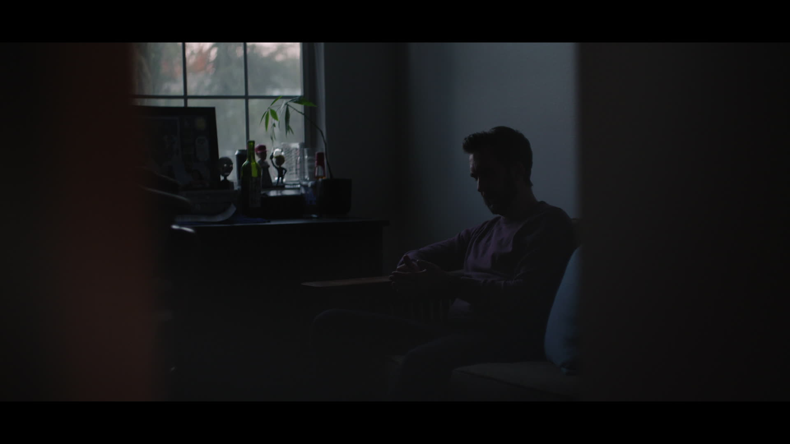
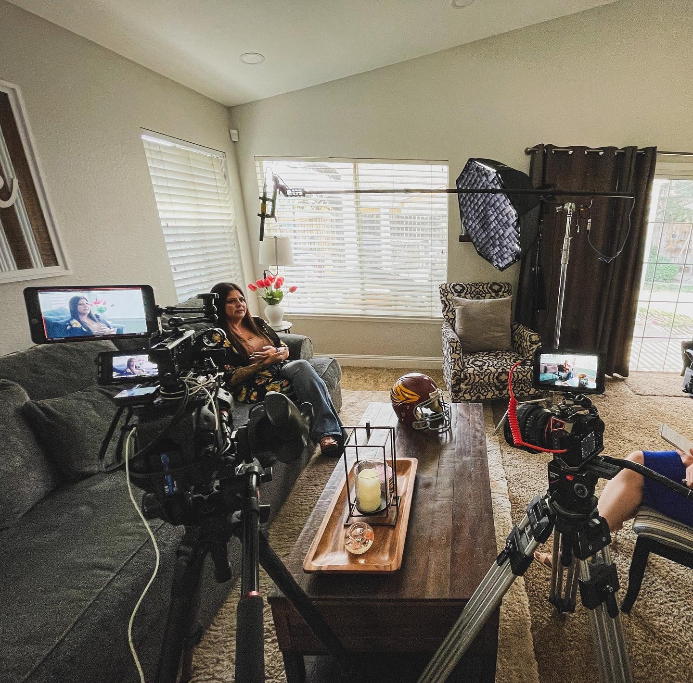
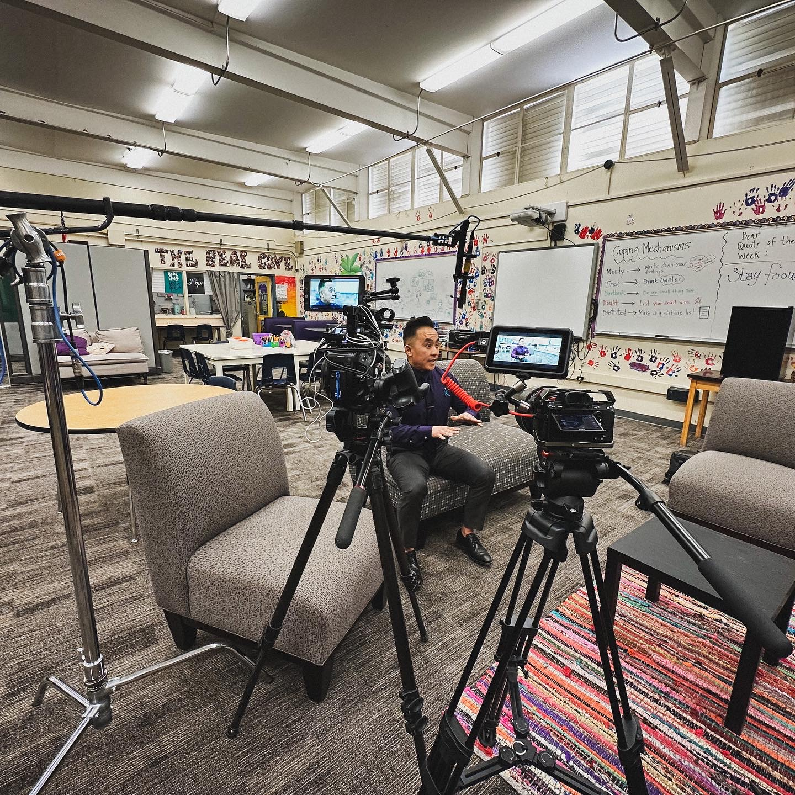
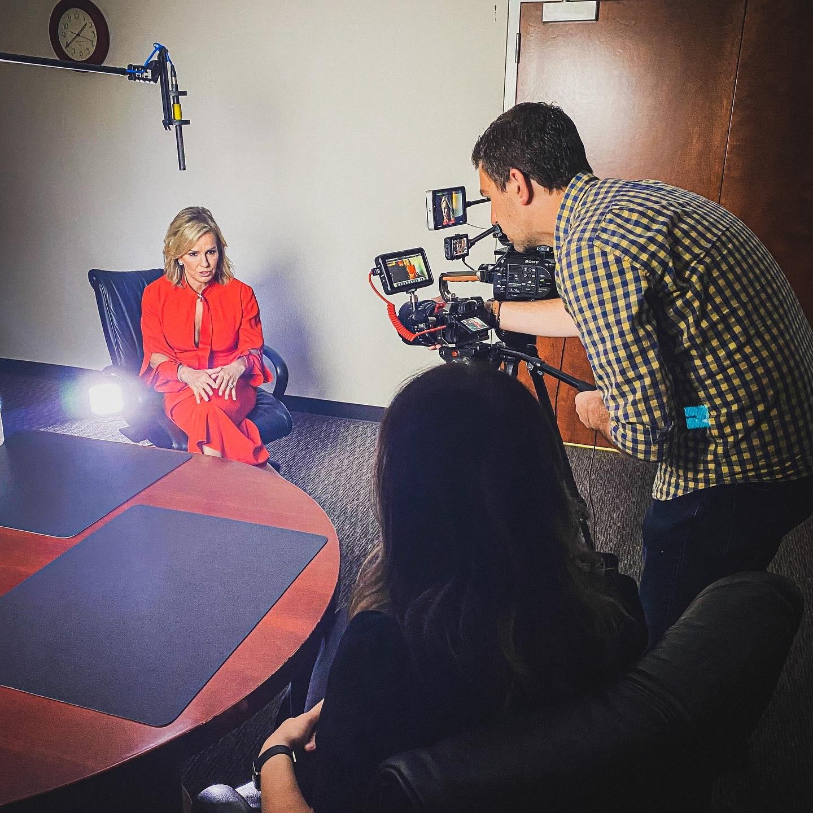
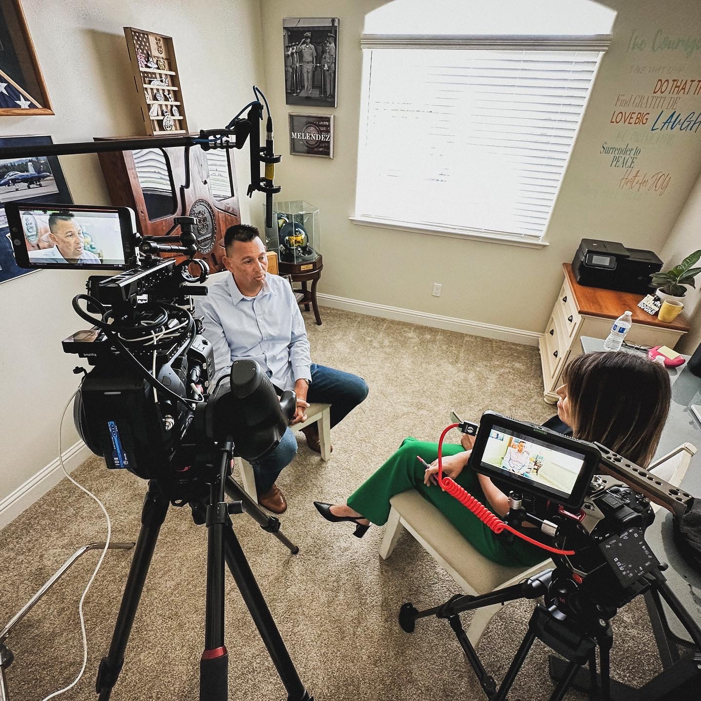

Project Detail · Documentary Special
A Critical
State of Mind
An unflinching documentary special exploring the mental health crisis through the people, families, and systems living inside it.
The Story
A crisis hiding in plain sight.
A Critical State of Mind began with a simple question: why are so many people struggling with mental health, yet so few are talking about it? Rather than building the documentary around statistics or policy debates, we focused on the people behind the issue, following survivors, families, educators, healthcare providers, and advocates whose experiences revealed the real impact of the mental health crisis.
The storytelling was designed to move beyond the stigma often associated with mental health. Alongside stories of loss and hardship, we highlighted the people and programs working to create change, from school-based support systems to community organizations expanding access to care. By grounding larger systemic issues in personal experiences, the documentary transformed a complex topic into a relatable and hopeful conversation.
The result was a documentary focused not only on the challenges facing California, but on the paths forward. A Critical State of Mind earned the 2023-2024 Northern California EMMY Award for Best News Special and was honored in Washington, D.C. with the Mental Health America Media Award, recognizing its contribution to advancing public understanding of mental health and reducing stigma through storytelling.
Frames / Behind the Scenes










Selected frames and behind-the-scenes images from the production.